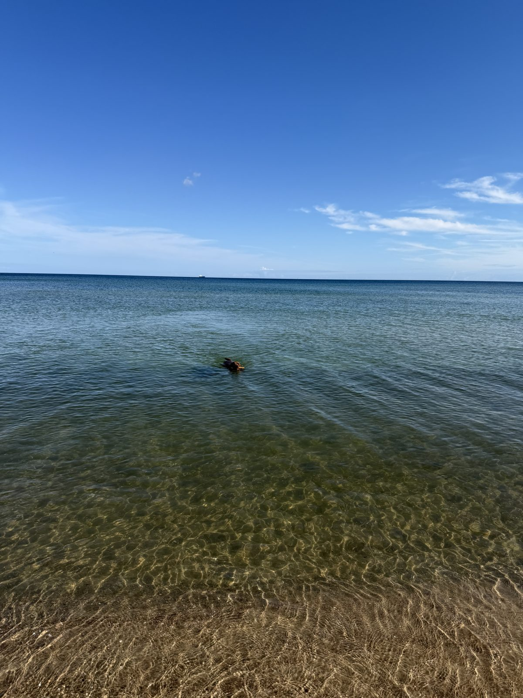
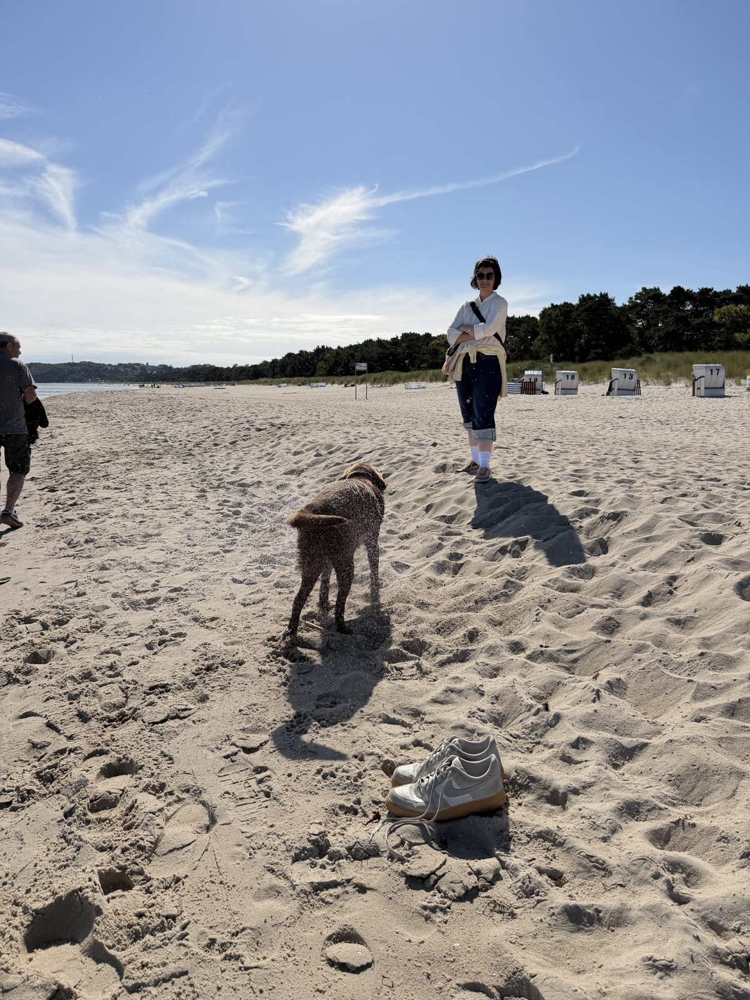

11. September 2026
Unsere Wasserwutz

Heute am Strand von Baabe: Unser Hund ist natürlich so eine Wasserwutz – er schwimmt einfach zu gerne.

11. September 2026

Heute am Strand von Baabe: Unser Hund ist natürlich so eine Wasserwutz – er schwimmt einfach zu gerne.
